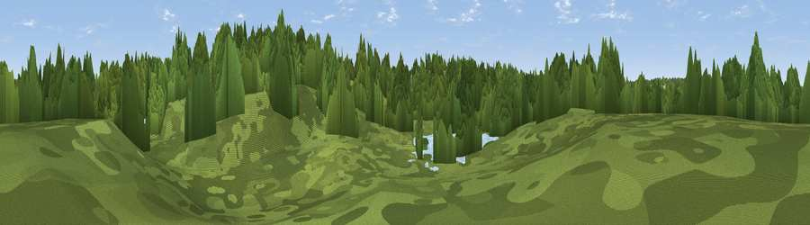

Viewpoint near Swanwick
#46325 in England · top 100% of its area beats it · near SwanwickThe view, rendered

A 360° render of this exact spot computed from the terrain model, tree cover and land cover — summer colours, afternoon light, calibrated against photographs of famous viewpoints. Real trees, hedges and buildings will differ in detail.
The panorama
Grey silhouette: terrain skyline in each direction (720 bearings, Earth curvature and refraction included). Dashed green: skyline with trees (+15 m) and buildings (+8 m) as obstacles. Blue strip: how far the ground is visible on each bearing.
Where the view opens
Wedge length = distance to the farthest visible ground on that bearing (vegetation-aware). Rings at 10, 25 and 50 km.
What fills the view
84% woodland · 12% grassland · 3% water · 2% built-up
Angular shares of the visible panorama (visual magnitude), not map area. Landscape diversity 0.25 (0–1 Shannon).
Key numbers
More beautiful places nearby
The staircase of upgrades: each row has a higher view potential than everything closer. Driving times are estimates from straight-line distance, calibrated against real road routing — check an actual route before setting out.
| Place | Direction | Drive | Score |
|---|---|---|---|
| Beacon Hill | SSE · 2 km | ~4 min | 38.1 |
| Viewpoint near Lower Swanwick | WNW · 2 km | ~5 min | 42.4 |
| Viewpoint near Knowle | ESE · 4 km | ~9 min | 44.9 |
| Crockerhill | E · 7 km | ~14 min | 49.8 |
| Stephen's Castle Down | NNE · 11 km | ~21 min | 52.0 |
| Viewpoint near Droxford | NE · 12 km | ~22 min | 61.7 |
| Viewpoint near Southwick | ESE · 13 km | ~24 min | 74.3 |
| Viewpoint near Southwick | ESE · 14 km | ~25 min | 76.6 |
50.88793, -1.27749 · source: osm viewpoint · position refined by local search. Computed location — check access rights before visiting.